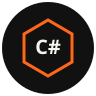
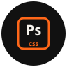
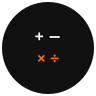

Unix
The tile text Unix is a hire-platform exam on Unix-family command line and process basics.
A marketplace pass is not the same object as years on a box. Operator record of systems administration starts 2002 and lives on Method.

UI platforme za angažovanje ih naziva sertifikacije. Na ovom domenu ostaju ispiti tržišta. Nije državna diploma. Nije doktorat. Školska evidencija ostaje na Metodu.
Freelancer.com / vWorker evidencija platforme za angažovanje, kao što je prikazano na snimcima ekrana od 19. septembra 2026. Originalni mali SVG znakovi na ovoj stranici. Ne artwork tržišta.
Školska evidencija (Vukova diploma, 11. juni 1998.) je različit objekat i ostaje na Metodu. Ne spajajte dve liste.
The tile text Unix is a hire-platform exam on Unix-family command line and process basics.
A marketplace pass is not the same object as years on a box. Operator record of systems administration starts 2002 and lives on Method.
The tile text Nginx is a hire-platform exam on the Nginx HTTP server and reverse proxy.
It tests vocabulary for static files, proxy_pass, and virtual hosts. It is not a vendor certificate from F5/Nginx Inc.
The tile text SQL is a hire-platform exam on generic Structured Query Language: select, join, filter, aggregate.
Kept separate from the MySQL product exam on the same record.
The tile text MySQL is a hire-platform exam on the MySQL database product, not on SQL as a language in the abstract.
Product exam. Distinct from the SQL tile.
The tile text HTML is a hire-platform exam on markup structure, elements, and document outline.
Not a W3C membership and not a living-standard editorship.
The tile text PHP is a hire-platform exam on PHP language basics used in older web stacks.
One exam. The record shows the same PHP tile twice across screens; it is not two credentials.
The tile text JavaScript is a hire-platform exam on JS language basics in the browser era of the test.
Not TC39 membership. Not a Node.js foundation credential.

The tile text C# Programming is a hire-platform exam on C# syntax and object basics.
Not a Microsoft Certified credential. No exam ID from Microsoft is claimed here.
The tile text WordPress is a hire-platform exam on WordPress as a CMS: themes, posts, plugins at the level the test used.
Not a WordPress.org or Automattic staff credential. The live domain currently still has a default WordPress Hello world until the static spine replaces the document root.

The tile text Adobe Photoshop CS5 is a hire-platform exam on Photoshop as it existed in the CS5 product line.
Dated tool. CS5 is a 2010-era release. Not a current Adobe Certified Professional ID.
The tile text SEO is a hire-platform exam on search-engine optimisation vocabulary: titles, crawlers, links, on-page basics.
A marketplace quiz is not a ranking. This domain does not sell a miracle listing.
The tile text US English is a hire-platform language exam. Two stars are what the record shows.
A language exam on a hire site is not a university degree in English. School English sits on the Vukova diploma line on Method.
The tile text UK English is a hire-platform language exam. Two stars are what the record shows.
Kept beside US English because the platform issued two tiles. Spelling variants are not two diplomas.

The tile text Basic Numeracy is a hire-platform arithmetic exam: the four operations as the test framed them.
Not a mathematics degree. School mathematics sits on the Vukova diploma line on Method.
The tile text AdWords is a hire-platform exam on Google’s paid-search product under the name it used before Google Ads.
Not a current Google Skillshop certificate unless a Skillshop ID is produced. None is on this record.
The tile text Google AdSense is a hire-platform exam on the AdSense publisher product: placements, policies, basic reporting.
Not proof of an active AdSense account on this domain. This site ships with no ads and no tracker.
The tile text Freelancer Orientation is a platform onboarding exam: how that marketplace expected sellers to behave.
Orientation, not a skill. freelancer.com/u/kerberus remains a hire record from 2006, not a current bid profile on this domain.
The tile text Employer Orientation Exam is a platform onboarding exam for the hiring side of the same marketplace.
Orientation, not a skill. It does not make this domain a staffing agency.
The tile text General Orientation Exam is a catch-all platform onboarding test.
Orientation, not a skill.
The tile text Foundation vWorker Member is a legacy membership badge from vWorker, a hire marketplace later absorbed by Freelancer.
No star on the tile. Membership, not an exam score. Do not restyle it as a university foundation year.
Svako može da pita za izvor navedene činjenice. Ako se kasnije proizvede zvanični Skillshop, Adobe ili Microsoft ID, dobija svoju liniju. Ove pločice nisu to.